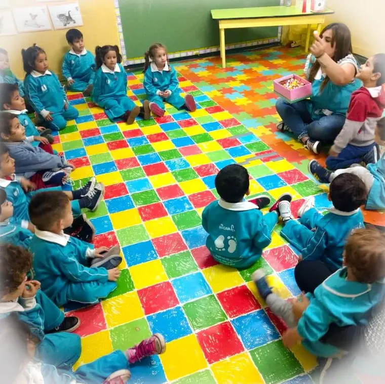
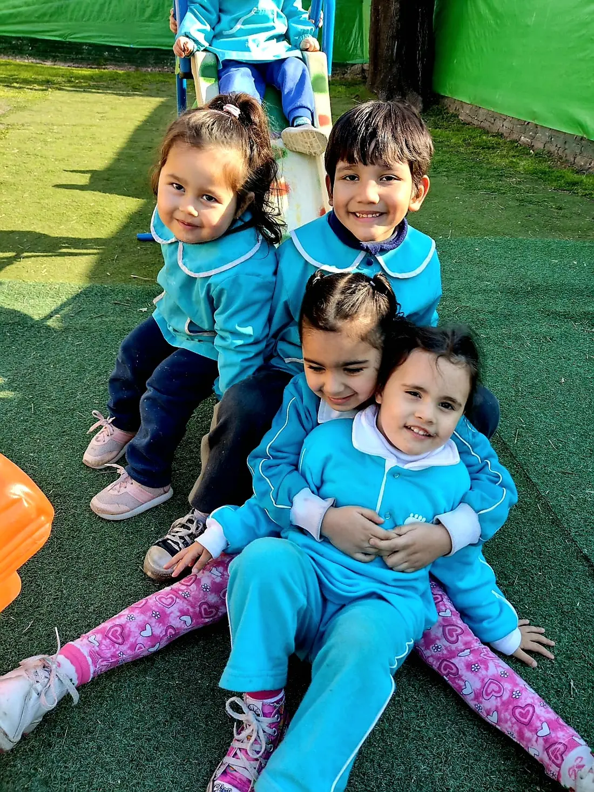
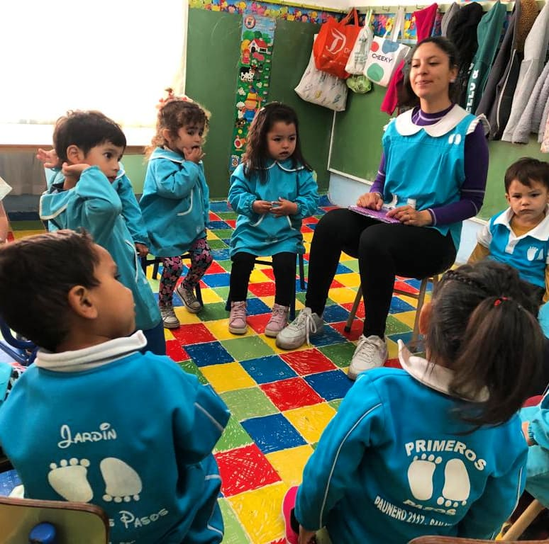

Inglés
Un primer encuentro con otro idioma.
Jardín maternal privado · Vacantes 2027
El mejor lugar después del hogar.
Vení con tu hijo a compartir una actividad y a conocer a nuestras seños.

Un primer encuentro, juntos.De 18 meses a 4 años al ingreso
Visitas con turno · San Miguel
Así se vive el jardín
Una ronda, una canción, un juego compartido. Un mundo por descubrir, a su ritmo.
Quiero conocerlo con mi hijo.jpeg)

Un primer encuentro con otro idioma.
Ritmos y canciones para descubrir juntos.
El cuerpo también juega y se expresa.
Propuestas según la edad y la sala. En la visita también te contamos sobre Huerta y Computación.
Imágenes recreadas con IA a partir de fotos del jardín.
Las personas, primero
Conocé al equipo, recorré el jardín y preguntá todo lo que necesites.
La adaptación, sus tiempos, tus dudas. Queremos que puedan conocernos antes de elegir.
Quiero conocerlosCámaras de seguridad en cada sala para monitoreo interno del día a día, junto al acompañamiento de nuestras seños.
Todos los días enviamos fotos y/o videos de sus actividades para que también seas parte de sus descubrimientos.
“siempre nos acompañaron con paciencia y contención”Lara Sánchez · Leer reseña
“la adaptación respetuosa, vínculo afectivo”Denise Ayelen Cirulli · Ver perfil y opiniones
Una primera experiencia juntos

Tu hijo conoce el espacio con una seño y otros chicos.
Preguntás, recorrés y conocés nuestra propuesta.
Después de conocernos, pueden consultar la reserva.
Cada chico tiene su tiempo. La visita es para empezar a conocernos.
Quiero coordinar nuestra visita
Un regalo para esta nueva etapa
Vengan a vivir el jardín juntos. Si reservás la vacante durante la entrevista, el uniforme de tu pequeño va de regalo.
Quiero mi visita con este beneficioPara reservas 2027 realizadas en la entrevista. Sujeto a disponibilidad de vacante en su sala.
Horarios, pañales, adaptación: conversalo con Rosana para conocer las opciones para tu hijo.
Quiero visitar el jardín y conversarLas visitas se coordinan en Paunero 2117, San Miguel. Si buscás vacante en Monseñor Blois 1684, consultá también las características y disponibilidad de esa sede.
Está bien. Es un primer encuentro: puede mirar, acercarse y descubrir a su ritmo. No tiene que adaptarse en una visita.
Escribinos para coordinar una visita y conversar sobre su edad al ingreso, horarios y disponibilidad. Recibimos chicos de 18 meses a 4 años al ingreso.
Primero conocen el jardín. Si eligen la propuesta y hay lugar en su sala, el equipo les explica las condiciones de reserva. Si necesitás comenzar antes, consultá disponibilidad.
Vengan a conocernos. Jueguen un ratito. Imaginen esta nueva etapa, juntos.
Quiero conocer el jardín con mi hijoVisitas con turno · Paunero 2117 · San Miguel
Primeros Pasos
El mejor lugar después del hogar.